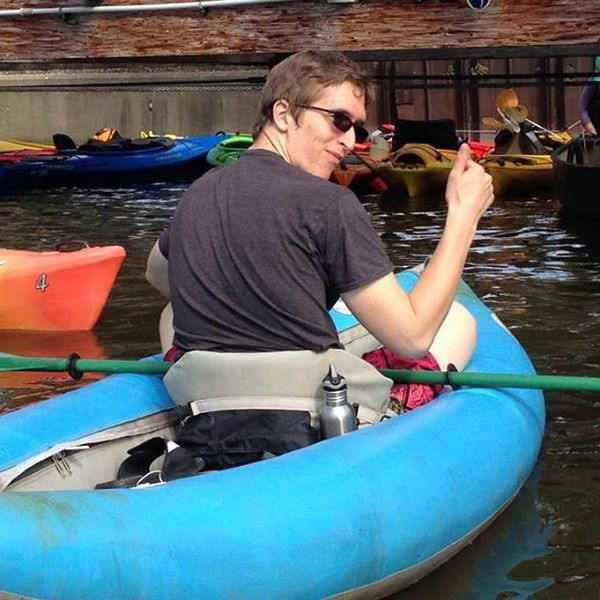
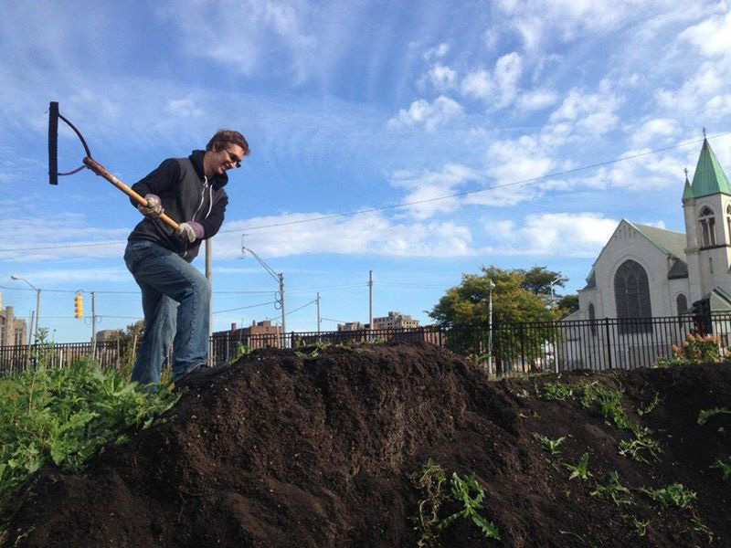

Resume
Here you can find a summary of my career so far. Please note that grade point averages (GPA) have been rounded to two decimal places. Testimonials about projects I've completed can be found at the bottom of the "About" page.
Skills
- Web design and development
- Instructional design and development
- Game design and development
- Research
- Data analysis
- Database management
- Fundraising
- Volunteer recruitment and coordination
- Creative and critical thinking
- Teaching and tutoring
- Written, oral, and digital communication
- Customer service
- Social media
- Microsoft Office
- Adobe Creative Cloud
- Intermediate Spanish
Awards and Honors

- Presenter at seven philosophy conferences in the United States, Canada, and Portugal (2013-2022)
- Tuition Scholarship recipient at Boston College (2020)
- Elected M.A. Representative, Marquette Philosophy Graduate Student Association (2016)
- Trinity Fellowship recipient at Marquette University (2015)
- Jonathan Edwards Prize in Philosophy recipient at UMASS Amherst (2012)
Education
Accredited Coursework
- Certificate in Web Development, Montgomery College
- Completing courses in full-stack web development. (in progress)
- Certificate in Theology and Ministry, Boston College
- Completed courses in theology, education, history, and biblical studies. (3.78 GPA)
- Master of Arts in Philosophy, Marquette University
- Specialization in Social and Applied Philosophy. (3.94 GPA)
- Graduate coursework, University of Northern Iowa
- Completed courses in nonprofit management and leadership. (3.67 GPA)
- Bachelor of Arts in Philosophy, University of Massachusetts Amherst
- Minor in Computer Science. (3.39 GPA)
- Undergraduate coursework, Gordon College
- Completed courses in physics, psychology, philosophy, and computer science. (3.33 GPA)
Other Training
- Professional Certificate in Writing for Video Games, EdX/UBCx
- Completed courses in worldbuilding, dialogue, and game writing industry standards.
- Instructional Development Learning Path, LinkedIn Learning
- Completed courses on the technical tools used in instructional development.
- Instructional Design Learning Path, LinkedIn Learning
- Completed courses in instructional design for multiple modalities and contexts.
- Data Science Professional Certificate, Coursera/IBM
- Demonstrated proficiency in data science and machine learning with Python.
- Ethics in the Age of AI Specialization, Coursera/LearnQuest
- Demonstrated understanding of ethical strategies for emerging technology.
- Certified Nonprofit Professional (CNP), Nonprofit Leadership Alliance
- Demonstrated proficiency in ten competencies nationally identified as critical to success.
Experience
- Web & Marketing Intern, The Civic Circle
- Contributing to web design, providing web development services, and publishing website content. (March 2023 - Present)
- Volunteer, Catchafire
- Completed projects in software and IT for nonprofit partners and provided pertinent training materialsfor future reference. (September 2022 - January 2023)
- Community and Volunteer Engagement Manager, Christ House
- Supervised two staff members, managed a volunteer database, and led multimodal outreach to hundreds of volunteers at a medical respite facility in Washington, DC. (April 2022 - August 2022)
- Assistant, L'Arche Syracuse
- Served as Direct Support Professional and Med Responsible Person for three people with disabilities in Syracuse, NY. (November 2020 - November 2021)
- Volunteer Recruiter, Christian Appalachian Project
- Coordinated volunteer blog and engaged in multimodal outreach to hundreds of volunteers across the country. (August 2019 - August 2020)
- Food Pantry Caseworker, Christian Appalachian Project
- Maintained a safe and clean pantry environment and facilitated a "shopping" experience for program participants in Mount Vernon, KY. (August 2018 - August 2019)
- Intern, Los Angeles Catholic Worker
- Lived and worked with a gospel-based resistance community in Boyle Heights and downtown Los Angeles. (July 2018 - August 2019) 
- Tutor, Self-employed
- Tutored middle and high school students in Lexington, MA. (February 2018 - August 2019)
- Shipper, Marathon Staffing Group
- Received and packed prepared goods at Sterilite Corporation in Townsend, MA. (November 2017 - February 2018)
- Trinity Fellow, Marquette University
- Engaged in grant writing, research, and project management with nonprofit partner organizations in Milwaukee, WI. (September 2015 - May 2017)
- Food Justice Fellow, Repair the World
- Recruited and coordinated volunteers for food access and food sovereignty initiatives in Detroit, MI. (September 2014 - July 2015)
- Corps Member, AmeriCorps NCCC FEMA Corps
- Performed Disaster Survivor Assistance and created training materials for future Corps Members. (August 2013 - June 2014)
- Intern, CourseWorld
- Reviewed and indexed hundreds of Philosophy videos for a nonprofit e-learning startup in the humanities. (May 2013-July 2013)